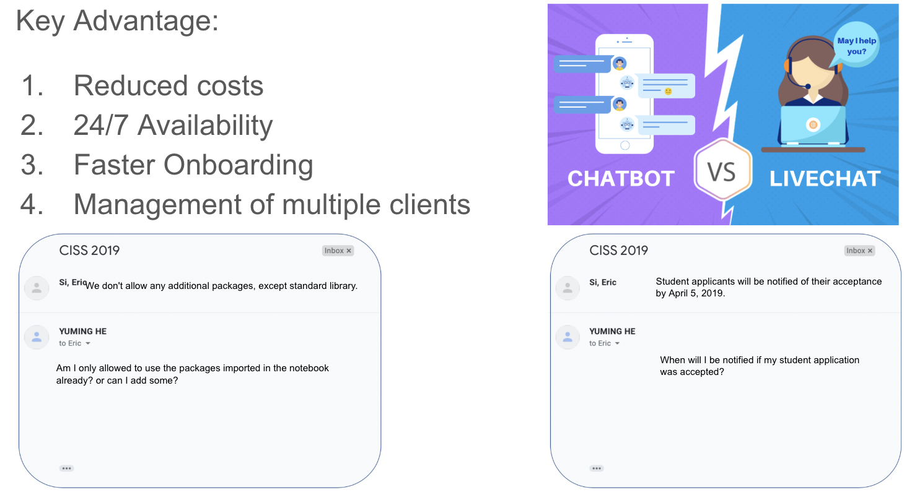
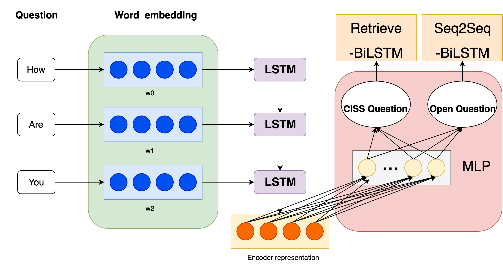
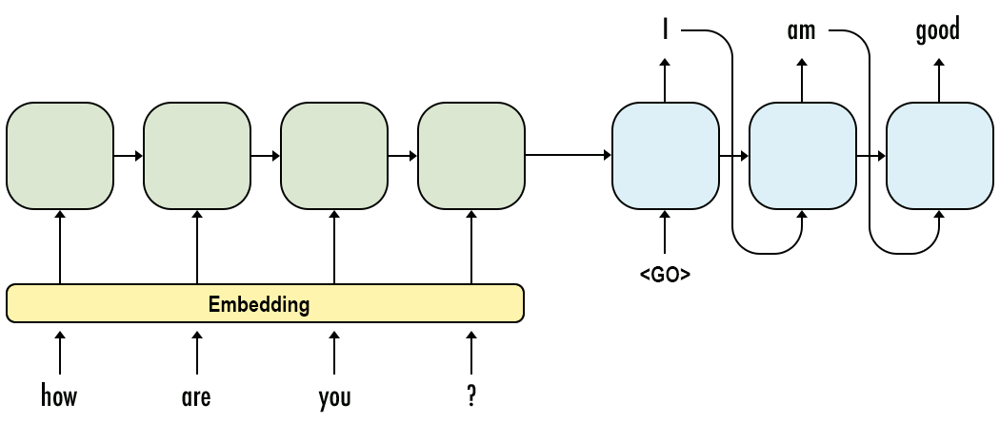
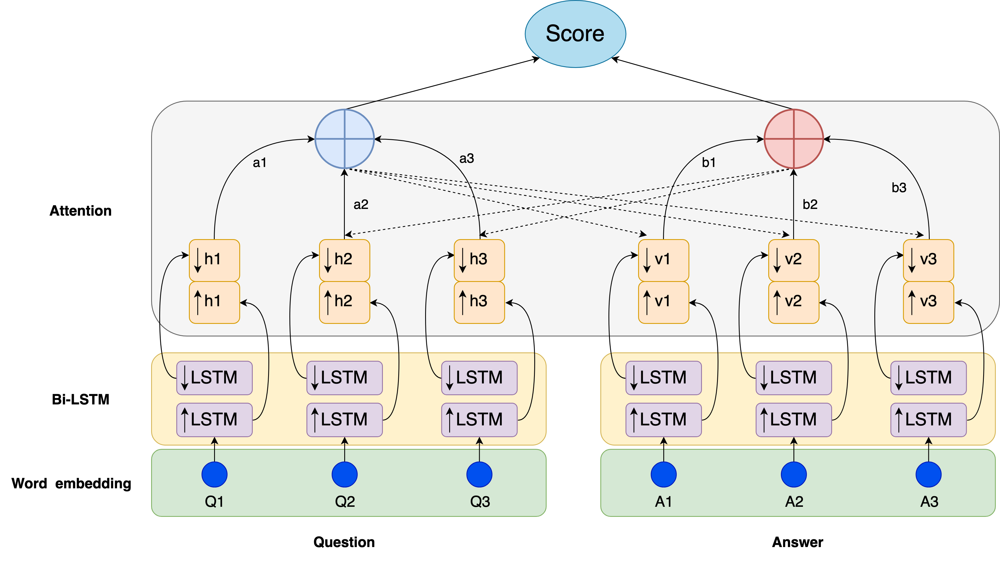

Motivation:
We aim to build an intelligent chat bot for answering both general questions (chit-chat) and summer camp (CISS) related questions.
Model:
Fig.1: The overview of our framework. It contains two modules, one is a seq2seq-based generative model for answering chit-chat questions, the other is retrieval-based model for selecting the most relevant answer for the given summer camp (CISS) question.

Fig.2: The seq2seq-based generative model for answering chit-chat questions.

Fig.3 The retrieval-based model for selecting the most relevant answer for the given summer camp (CISS) question. Given a question and a answer pair, we use two different LSTMs to encode them respectively. A matching attention mechanism is adopted to better capture their relations and model their semantic meanings. Then, a score function (e.g., cosine sim, bilinear) is applied to calculate the similarity between the question and the answer. We adopt pairwise ranking function to train the whole module.